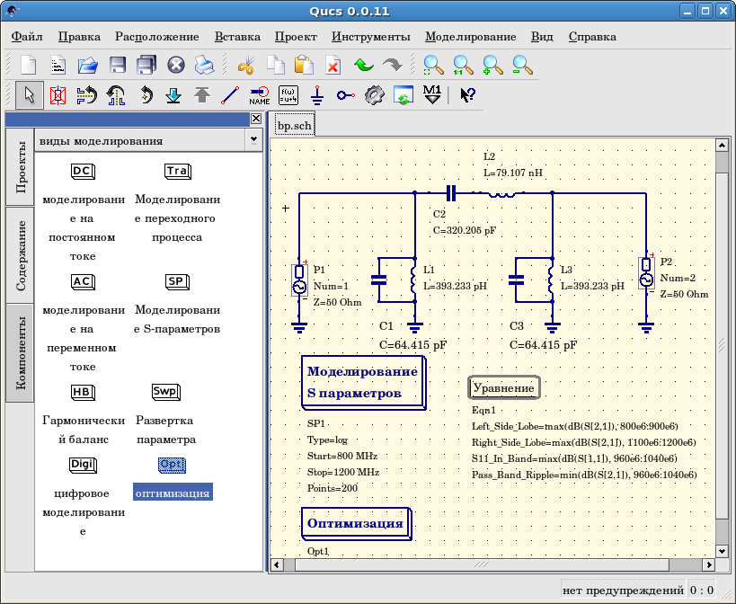

- Qucs -
Почти универсальный симулятор цепей
Быстрый старт в
оптимизации
Для оптимизации цепей в Qucs используется утилита ASCO
(http://asco.sourceforge.net/). Ниже
дается краткое описание того, как подготовить схему, выполнить утилиту и интерпретировать результат. Перед этим в системе должна быть установлена ASCO.
Оптимизация цепи - это ничто иное, как минимизация функции стоимости. Это может быть время задержки или нарастания цифровой цепи, либо мощность или усиление аналоговой цепи. Еще одна возможность - определить задачу оптимизации как сочетание функций, что в этом случае ведет к определению показателя добротности.
Для подготовки списка связей к оптимизации две вещи должны быть добавлены к уже
существующей схеме: нужно вставить уравнение(я) и блок компонента оптимизации.
Возьмите схему из рис. 1 и внесите в нее изменения так, чтобы получить в результате
схему на рис. 2.

Рис. 1 - Исходная схема.

Рис. 2 - Подготовленная схема.
Теперь откройте компонент оптимизации и выберите вкладку оптимизации. Из
имеющихся параметров особенное внимание следует уделить "Максимальному числу
итераций", "Постоянной F" и "Фактору пересечения". Переоценка или недооценка
может привести к преждевременной сходимости оптимизатора к локальному
минимуму или к очень долгому времени оптимизации.

Рис. 3 - Диалог оптимизации, параметры алгоритма.
На вкладке "Переменные" определяется, какие элементы цепи будут выбраны и
диапазоны их допустимых значений (рис. 4). Имена переменных соответствуют
идентификаторам, помещенным в свойствах компонентов, а не именам
компонентов.

Рис. 4 - Диалог оптимизации, параметры переменных.
Наконец, переходите к "Целям", где задаются цели оптимизации (сделать максимальным,
сделать минимальным) и ограничения (меньше, больше, равно). Затем ASCO автоматически
объединяет их в одну функцию стоимости, которая делается минимальной.

Рис. 5 - Диалог оптимизации, параметры целей.
Следующий шаг состоит в изменении схемы и определении, какие элементы
требуется оптимизировать. Полученная в результате схема изображена на рис. 6.

Рис. 6 - Новое главное окно Qucs.
Последний шаг - запуск оптимизации, то есть моделирования, нажатием клавиши F2.
По кончании работы, на которую на современном компьютере уйдет всего несколько
секунд, наилучшие результаты моделирования будут показаны в графическом виде.

Рис. 7 - Окно Qucs с результатами.
Оптимальные параметры цепи могут быть найдены в диалоге оптимизации, на вкладке
"Переменные". Теперь они являются начальными значениями каждой из представленных
переменных (рис. 8).

Рис. 8 - Лучшие найденные параметры цепи.
наверх